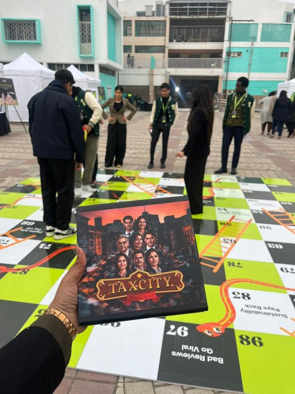
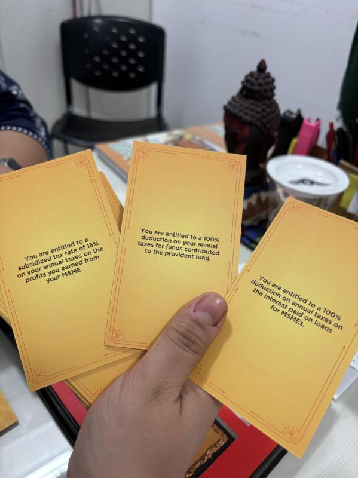
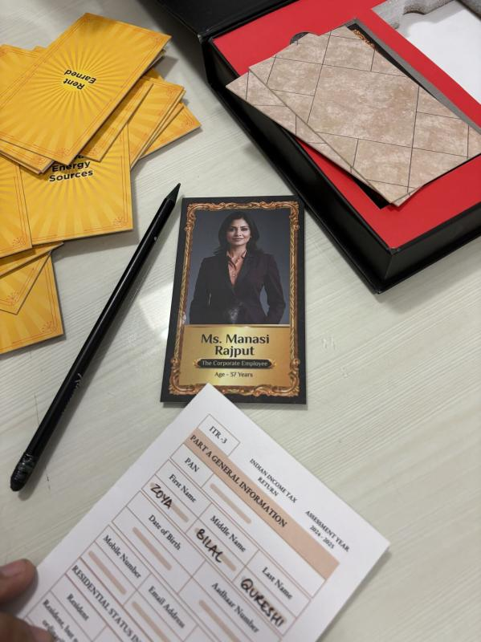

CFO @ TaxCity Education
Chief Financial Officer · Finance & Grants Lead · since June 2024 · Ministry of Education recognised
Update: In the end, we had to wind down TaxCity as giving away thousands of kits for free across India was no longer financially sustainable, even with the grant funding we had secured. We donated the remaining kits to a few government schools we had previously visited, where they could continue to be used for financial literacy education.
 axCity is a government-recognised social entrepreneurship project that educates Indians about taxes and personal finance through an experimental card game, taking players through the real-world tax filing journey in a way that is engaging, accessible, and actually useful. It was founded by a senior of mine whose idea of making financial literacy hands-on available through a physical game immediately resonated with me.
axCity is a government-recognised social entrepreneurship project that educates Indians about taxes and personal finance through an experimental card game, taking players through the real-world tax filing journey in a way that is engaging, accessible, and actually useful. It was founded by a senior of mine whose idea of making financial literacy hands-on available through a physical game immediately resonated with me.
I joined TaxCity in June 2024 as the Chief Financial Officer, drawn by the simplicity of the idea and the scale of the problem it was trying to solve. Millions of young Indians have no practical exposure to taxation, and TaxCity was doing something genuinely different about it.
My Role
As CFO, I lead the finance and grants department, overseeing a team of finance interns. My responsibilities span financial planning, grant research and applications, budgeting, and ensuring the organisation's fiscal operations run cleanly as it continues to scale. Beyond the numbers, I've also been involved in outreach, presenting TaxCity's model to students and educators at schools across India.
Impact
- Reached 79,000+ students in India and across 27 countries
- Secured $120,000+ in grant funding through competitive research and proposals
- Generated over 550K INR in revenue
- Received formal recognition from the Ministry of Education, Government of India
- Received Letters of Recommendation from Members of Parliament
- Conducted presentations and workshops at schools across India

Featured at TETR College of Business — a live showcase of the TaxCity card game at TETR Disrupt, DPS R.K. Puram, with kits distributed and interactive demos.

In the press — featured by The Times of India, The Economic Times, and Dainik Bhaskar.

79,000+ students impacted across India and 27 countries.
About TaxCity
TaxCity is built on a straightforward belief: that financial literacy, especially around taxation, should not be a privilege reserved for those who can afford a chartered accountant or a business school education. The card game format strips away the jargon and puts players in the role of a taxpayer navigating real decisions, deductions, filings, compliance, in a low-stakes, high-engagement environment.
The project has been covered in national media and recognised at the government level for its contribution to financial education among youth. You can follow updates from TaxCity on our LinkedIn Page!